| Symbol |
Description |
| 628128_DIP32_SSOP32 | Description: 128K x 8 High-Speed CMOS Static RAM, 55/70ns, DIP-32/SSOP-32
Keys: RAM SRAM CMOS MEMORY
Datasheet: http://www.futurlec.com/Datasheet/Memory/628128.pdf |
| 628128_TSOP32 | Description: 128K x 8 High-Speed CMOS Static RAM, 55/70ns, TSOP-I-32
Keys: RAM SRAM CMOS MEMORY
Datasheet: http://www.futurlec.com/Datasheet/Memory/628128.pdf |
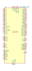
AS4C256M16D3 | Description: 4Gb (256Mx16 bit) Double Data Rate 3 Synchronous DRAM
Keys: DDR3 DRAM MEMORY
Datasheet: https://www.alliancememory.com/wp-content/uploads/pdf/ddr3/4GB-AS4C256M16D3.pdf |
AS4C4M16SA | Description: 64M (4M x 16 bit) Synchronous DRAM (SDRAM), TSOP-II-54
Keys: SDRAM Synchronus DRAM PC166 PC143 64Mb 16Mbx4 MEMORY
Datasheet: https://www.alliancememory.com/wp-content/uploads/pdf/dram/64M-AS4C4M16SA-CI_v3.0_March%202015.pdf |
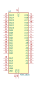
AS6C1616 | Description: 1024k x 16 bit low power CMOS SRAM
Keys: memory SRAM
Datasheet: https://www.alliancememory.com/wp-content/uploads/pdf/AS6C1616-TSOPI.pdf |
AS6C4008-55PCN | Description: 512K x 8 Low Power CMOS RAM, DIP-32
Keys: RAM SRAM CMOS MEMORY
Datasheet: https://www.alliancememory.com/wp-content/uploads/pdf/AS6C4008.pdf |
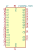
CY62256-70PC | Description: 256K (32K x 8) Static RAM, 70ns, DIP-28
Keys: RAM SRAM CMOS MEMORY
Datasheet: https://ecee.colorado.edu/~mcclurel/Cypress_SRAM_CY62256.pdf |
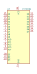
CY7C199 | Description missing |
ESP-PSRAM32 | Description: 32 Mbit serial pseudo SRAM device organized as 4Mx8 bits, 1.8 VCC, SOIC8 (SOP8)
Keys: 32 Mbit serial pseudo SRAM MEMORY
Datasheet: https://www.espressif.com/sites/default/files/documentation/esp-psram32_datasheet_en.pdf |
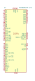
H5AN8G8NAFR-UHC | Description: 8Gb CMOS Double Data Rate IV Synchronous RAM
Keys: DDR4 DRAM MEMORY
Datasheet: https://www.skhynix.com/product/filedata/fileDownload.do?seq=7687 |
HM62256BLP | Description: 32,768-word × 8-bit High Speed CMOS Static RAM, 70ns, DIP-28
Keys: RAM SRAM CMOS MEMORY
Datasheet: https://web.mit.edu/6.115/www/document/62256.pdf |
IDT7006PF | Description: 16K x 8 Dual-Port SRAM, TQFP-64
Keys: dual-port ram
Datasheet: https://www.idt.com/document/dst/7006-data-sheet |
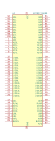
IDT7027_TQ100 | Description missing |
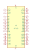
IDT7132 | Description missing |
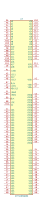
IDT71V65903S | Description: 165 pins BGA 3.3V high-speed 9 Megabit synchronous SRAMs 512K x 18 (or 256K x 36)
Keys: None
Datasheet: None |
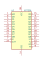
IDT7201 | Description missing |
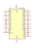
IDT7202 | Description missing |
IDT7203 | Description: 2048x9 CMOS Asynchronous FIFO, DIP-28
Keys: asynchronous fifo memory
Datasheet: http://www.idt.com/document/7203-7208-datasheet |
IDT7204 | Description: 4096x9 CMOS Asynchronous FIFO, DIP-28
Keys: asynchronous fifo memory
Datasheet: http://www.idt.com/document/7203-7208-datasheet |
IDT7205 | Description: 8192x9 CMOS Asynchronous FIFO, DIP-28
Keys: asynchronous fifo memory
Datasheet: http://www.idt.com/document/7203-7208-datasheet |
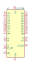
IDT7206 | Description: 16384x9 CMOS Asynchronous FIFO, DIP-28
Keys: asynchronous fifo memory
Datasheet: http://www.idt.com/document/7203-7208-datasheet |
IDT7207 | Description: 32768x9 CMOS Asynchronous FIFO, DIP-28
Keys: asynchronous fifo memory
Datasheet: http://www.idt.com/document/7203-7208-datasheet |
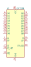
IDT7208 | Description: 65536x9 CMOS Asynchronous FIFO, DIP-28
Keys: asynchronous fifo memory
Datasheet: http://www.idt.com/document/7203-7208-datasheet |
IS42S16400J-xC | Description: 64Mb Synchronous DRAM, 1 Mb x 16 b x 4 Banks, Cu leadframe plated with matte Sn, TSOP-II-54
Keys: DRAM MEMORY
Datasheet: http://www.issi.com/WW/pdf/42-45S16400J.pdf |
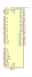
IS42S16400J-xT | Description: 64Mb Synchronous DRAM, 1 Mb x 16 b x 4 Banks, Alloy42 leadframe plated with matte Sn, TSOP-II-54
Keys: DRAM MEMORY
Datasheet: http://www.issi.com/WW/pdf/42-45S16400J.pdf |
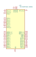
IS43LQ32256A-062BLI | Description: 256Mx32 bit Low Power Double Data Rate 4 (LPDDR4) SDRAM, 1600 MHz, Industrial, BGA-200
Keys: DRAM MEMORY
Datasheet: http://www.issi.com/WW/pdf/43-46LQ32256A-AL.pdf |
IS43LQ32256AL-062BLI | Description: 256Mx32 bit Low Power Double Data Rate 4X (LPDDR4X) SDRAM, 1600 MHz, Industrial, BGA-200
Keys: DRAM MEMORY
Datasheet: http://www.issi.com/WW/pdf/43-46LQ32256AL-AL.pdf |
IS61C5128AL-10KLI | Description: 512K x 8 HIGH-SPEED CMOS STATIC RAM, 10ns, SOJ-36
Keys: SRAM MEMORY
Datasheet: http://www.issi.com/WW/pdf/61-64C5128AL.pdf |
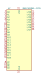
IS61C5128AL-10TLI | Description: 512K x 8 HIGH-SPEED CMOS STATIC RAM, 10ns, TSOP II-44
Keys: SRAM MEMORY
Datasheet: http://www.issi.com/WW/pdf/61-64C5128AL.pdf |
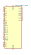
IS61C5128AS-25HLI | Description: 512K x 8 HIGH-SPEED CMOS STATIC RAM, 25ns, STSOP I-32
Keys: SRAM MEMORY
Datasheet: http://www.issi.com/WW/pdf/61-64C5128AL.pdf |
IS61C5128AS-25QLI | Description: 512K x 8 HIGH-SPEED CMOS STATIC RAM, 25ns, SOP-32
Keys: SRAM MEMORY
Datasheet: http://www.issi.com/WW/pdf/61-64C5128AL.pdf |
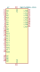
IS61C5128AS-25TLI | Description: 512K x 8 HIGH-SPEED CMOS STATIC RAM, 25ns, TSOP II-32
Keys: SRAM MEMORY
Datasheet: http://www.issi.com/WW/pdf/61-64C5128AL.pdf |
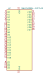
IS64C5128AL-12CTLA3 | Description: 512K x 8 HIGH-SPEED CMOS STATIC RAM, 12ns, TSOP II-44
Keys: SRAM MEMORY
Datasheet: http://www.issi.com/WW/pdf/61-64C5128AL.pdf |
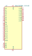
IS64C5128AL-12KLA3 | Description: 512K x 8 HIGH-SPEED CMOS STATIC RAM, 12ns, SOJ-36
Keys: SRAM MEMORY
Datasheet: http://www.issi.com/WW/pdf/61-64C5128AL.pdf |
KM62256CLP | Description: 32Kx8 bit Low Power CMOS Static RAM, 55/70ns, DIP-28
Keys: RAM SRAM CMOS MEMORY
Datasheet: https://www.futurlec.com/Datasheet/Memory/62256.pdf |
MT48LC16M16A2P | Description: 256M – (16M x 16 bit) Synchronous DRAM (SDRAM), TSOP-II-54
Keys: SDRAM Synchronus DRAM PC100 PC133 256Mb 16Mbx16 MEMORY
Datasheet: https://www.micron.com/-/media/client/global/documents/products/data-sheet/dram/256mb_sdr.pdf |
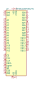
MT48LC16M16A2TG | Description: 256M (16M x 16 bit) Synchronous DRAM (SDRAM), TSOP-II-54
Keys: SDRAM Synchronus DRAM PC100 PC133 256Mb 16Mbx16 MEMORY
Datasheet: https://www.micron.com/-/media/client/global/documents/products/data-sheet/dram/256mb_sdr.pdf |
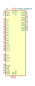
MT48LC32M8A2P | Description: 256M – (32M x 8 bit) Synchronous DRAM (SDRAM), TSOP-II-54
Keys: SDRAM Synchronus DRAM PC100 PC133 256Mb 32Mbx8 MEMORY
Datasheet: https://www.micron.com/-/media/client/global/documents/products/data-sheet/dram/256mb_sdr.pdf |
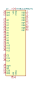
MT48LC32M8A2TG | Description: 256M (32M x 8 bit) Synchronous DRAM (SDRAM), TSOP-II-54
Keys: SDRAM Synchronus DRAM PC100 PC133 256Mb 32Mbx8 MEMORY
Datasheet: https://www.micron.com/-/media/client/global/documents/products/data-sheet/dram/256mb_sdr.pdf |
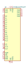
MT48LC64M4A2P | Description: 256M – (64M x 4 bit) Synchronous DRAM (SDRAM), TSOP-II-54
Keys: SDRAM Synchronus DRAM PC100 PC133 256Mb 64Mbx4 MEMORY
Datasheet: https://www.micron.com/-/media/client/global/documents/products/data-sheet/dram/256mb_sdr.pdf |
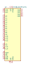
MT48LC64M4A2TG | Description: 256M (64M x 4 bit) Synchronous DRAM (SDRAM), TSOP-II-54
Keys: SDRAM Synchronus DRAM PC100 PC133 256Mb 64Mbx4 MEMORY
Datasheet: https://www.micron.com/-/media/client/global/documents/products/data-sheet/dram/256mb_sdr.pdf |
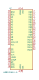
W9812G6KH-5 | Description: 128Mb Synchronous DRAM, 2 Mb x 16 b x 4 Banks, 200 MHz, TSOP-II-54
Keys: DRAM MEMORY
Datasheet: https://www.winbond.com/resource-files/da00-w9812g6khc1.pdf |
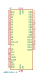
W9812G6KH-6 | Description: 128Mb Synchronous DRAM, 2 Mb x 16 b x 4 Banks, 166 MHz, TSOP-II-54
Keys: DRAM MEMORY
Datasheet: https://www.winbond.com/resource-files/da00-w9812g6khc1.pdf |
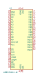
W9812G6KH-6I | Description: 128Mb Synchronous DRAM, 2 Mb x 16 b x 4 Banks, 166 MHz, TSOP-II-54
Keys: DRAM MEMORY
Datasheet: https://www.winbond.com/resource-files/da00-w9812g6khc1.pdf |
W9812G6KH-75 | Description: 128Mb Synchronous DRAM, 2 Mb x 16 b x 4 Banks, 133 MHz, TSOP-II-54
Keys: DRAM MEMORY
Datasheet: https://www.winbond.com/resource-files/da00-w9812g6khc1.pdf |